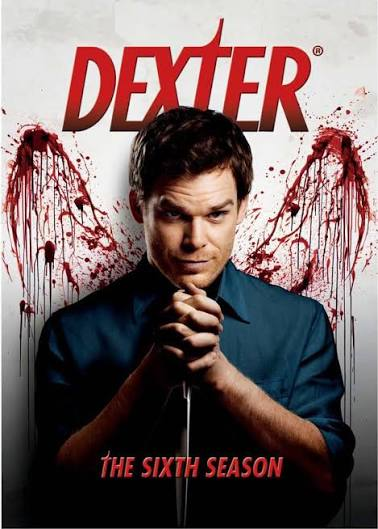

Dexter

Dexter Morgan (Michael C. Hall) é adotado aos três anos de idade por Harry Morgan (James Remar) e Doris (Kathrin Middleton), depois de ter se tornado órfão. Após detectar sua tendência homicida, o pai de Dexter decide ensinar a ele um código no intuito de canalizar a raiva do filho para situações mais propícias à violência.
Nesta nova lógica, Dexter deve matar apenas assassinos de pessoas inocentes com a condição de provar sua culpa. Ele inicia o desenvolvimento de diversas estratégias usando seu conhecimento e a experiência para realizar sua nova função.
Informações principais
- Gênero: Crime, drama e suspense
- Ano de lançamento: 2006
- Temporadas: 8
- Episódios: 96
- Criador: Jeff Lindsay
Curiosidades
- Michael C. Hall (Dexter) e Jennifer Carpenter (Debra) se casaram em segredo no dia 31 de dezembro de 2008. Eles se divorciaram em 2010, mas continuaram trabalhando juntos profissionalmente sem afetar a série.
- Julie Benz fez testes inicialmente para interpretar Debra Morgan, mas os produtores gostaram tanto dela que a escalaram para viver Rita Bennett, o par romântico de Dexter.
- Durante as gravações da quinta temporada, Michael C. Hall escondeu do elenco que estava lutando contra um Linfoma de Hodgkin. Ele usou uma peruca nos primeiros episódios devido à perda de cabelo pela quimioterapia e depois entrou em remissão.